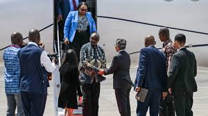
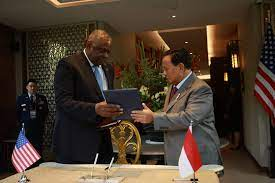
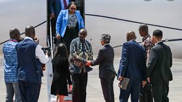
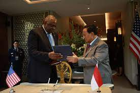

Kerja Sama Bilateral
1. Kerja Sama Indonesia – Australia dalam Penegakan Hukum & Keamanan Maritim Kerja sama bilateral Indonesia dengan Australia memiliki kontribusi besar terhadap pencapaian SDGs 16, terutama dalam bidang penegakan hukum, keamanan maritim, dan pemberantasan kejahatan lintas negara. Melalui Indonesia–Australia Police Cooperation Program (IAPCP), kedua negara bekerja sama dalam meningkatkan kapasitas kepolisian, pelatihan investigasi, penanganan terorisme, hingga kejahatan siber. Salah satu bentuk nyata kerja sama ini adalah operasi bersama dalam mencegah penyelundupan manusia dan perdagangan narkotika melalui wilayah perairan Indonesia. Australia memberikan dukungan teknologi pemantauan laut, pelatihan intelijen, serta pengembangan cyber forensic untuk membantu Indonesia memerangi kejahatan digital yang semakin meningkat. Kerja sama ini juga memperkuat kemampuan Polri dalam penanganan kasus besar, termasuk pelatihan counter-terrorism melalui Australian Federal Police (AFP). Upaya ini sejalan dengan SDGs 16 karena membantu meningkatkan keamanan nasional, memperkuat institusi hukum, dan menciptakan masyarakat yang lebih aman dari ancaman kejahatan lintas negara. Dengan adanya kolaborasi ini, Indonesia semakin mampu menjaga stabilitas kawasan dan meningkatkan kepercayaan internasional terhadap sistem hukumnya.
2. Kerja Sama Indonesia – Jepang dalam Reformasi Peradilan & Transparansi Pemerintahan Indonesia dan Jepang menjalin kerja sama yang kuat dalam bidang reformasi hukum dan penguatan lembaga peradilan, sebuah langkah penting dalam mendukung SDGs 16 yang menekankan keadilan serta institusi yang efektif dan transparan. Melalui Japan International Cooperation Agency (JICA), Jepang membantu Indonesia mengembangkan modernisasi sistem peradilan, termasuk digitalisasi pengadilan, penguatan administrasi hukum, serta pelatihan untuk hakim, jaksa, dan panitera. Salah satu program penting adalah pengembangan Case Management System untuk mempercepat proses persidangan dan meningkatkan akses masyarakat terhadap layanan hukum. Jepang juga mendukung peningkatan kapasitas Komisi Yudisial serta lembaga antikorupsi melalui pelatihan mengenai integritas dan tata kelola yang bersih. Selain itu, kerja sama dalam reformasi birokrasi membantu Indonesia memperluas pelayanan publik digital seperti e-court, e-procurement, dan sistem transparansi anggaran daerah. Kontribusi Jepang ini sangat penting untuk menciptakan pemerintahan yang akuntabel, bebas korupsi, dan mampu memberikan pelayanan hukum yang berkualitas. Dengan hubungan bilateral ini, Indonesia semakin mampu mewujudkan keadilan bagi semua lapisan masyarakat, memperkuat demokrasi, dan meningkatkan kepercayaan publik terhadap lembaga negara.
3. Kerja Sama Indonesia – Amerika Serikat dalam Pemberantasan Terorisme & Kejahatan Siber Kerja sama Indonesia dan Amerika Serikat memiliki peranan yang signifikan dalam mendukung pencapaian SDGs 16, terutama terkait penanganan terorisme, radikalisme, dan kejahatan siber yang menjadi ancaman global. Melalui US–Indonesia Security and Justice Sector Cooperation, kedua negara melakukan pertukaran intelijen, pelatihan pasukan khusus, serta peningkatan kapasitas aparat penegak hukum. Amerika Serikat membantu Indonesia melalui pendanaan, perangkat teknologi digital, dan cybersecurity training untuk meningkatkan kemampuan Badan Siber dan Sandi Negara (BSSN) serta unit cybercrime Polri. Kerja sama dalam memerangi pendanaan terorisme juga menjadi fokus utama melalui koordinasi antara Financial Intelligence Unit kedua negara. Selain itu, Amerika mendukung program deradikalisasi dan pencegahan ekstremisme berbasis komunitas yang dilakukan di berbagai daerah di Indonesia. Upaya ini tidak hanya meningkatkan keamanan nasional, tetapi juga menjaga stabilitas sosial dan kepercayaan publik terhadap institusi negara. Melalui kolaborasi ini, Indonesia menjadi lebih siap menghadapi ancaman modern sekaligus memperkuat sistem hukum dan keamanan yang adil, transparan, dan efektif sesuai target SDGs 16.
 


